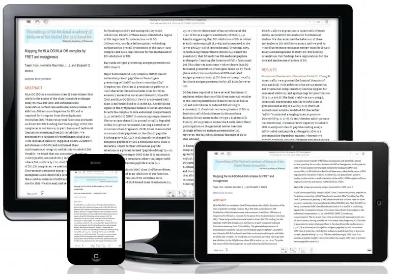

Media queries are a CSS feature that lets you apply styles to a page based on the characteristics of the viewport or the device (like width, height, orientation, resolution, etc.). They’re the backbone of responsive design, helping you adjust your layout for desktops, tablets, and phones. Container queries are a newer CSS feature that lets you apply styles based on the size of a container element, instead of the entire viewport.Why? Because sometimes components live inside different contexts — e.g., a card might be wide on desktop but narrow inside a sidebar. Media queries can’t solve that well because they only look at the viewport.
Width and Height
Media queries are most commonly used to adjust styles based on the width or height of the viewport (the visible area of the browser). You can set styles for specific screen widths, like making text smaller on narrow screens or changing layouts on wider screens. You can check for minimum or maximum width/height, which is useful for building responsive designs that adapt to mobile phones, tablets, and desktops.
Device Width and Height
While similar to viewport dimensions, these features refer to the full dimensions of the device’s screen, even if the browser is resized to be smaller. This was more common in older responsive design approaches when developers targeted specific devices directly, but today it’s less used since viewport-based queries are more flexible.
Aspect Ratio
Aspect ratio refers to the proportion between a screen’s width and height. Media queries can adjust layouts depending on whether the screen is wide (like a TV) or tall (like a phone). This is useful when designing elements for displays like ultrawide monitors or devices that don’t fit typical width/height patterns.